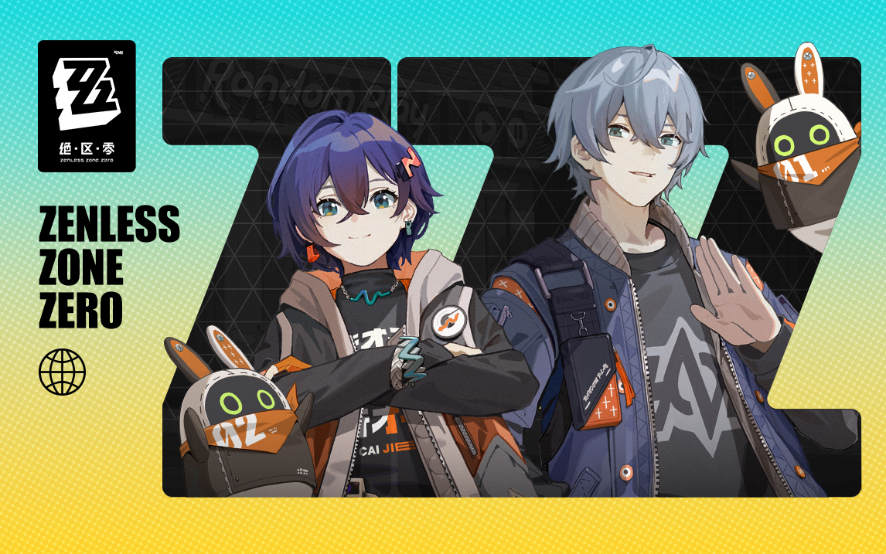

选择指南与推荐混搭：A 首页品牌感（午夜放映室）+ C 章节长卷节奏 + B 内页高密度索引。三套可并排对比或单套聚焦查看，使用下方按钮或 URL hash (#a / #b / #c / #all) 切换。
A · 午夜放映室 Midnight Screening Room
银幕焦点、暗冷空间、暖场次标签；品牌感最强。整站像一座永远在凌晨两点营业的单厅放映室，银幕是唯一光源。
1) 首页/入口 微缩构图

银幕满幅 keyart → 暗角四周 → 底部暖黄场次信息条
构图：单一银幕居中，四周暗角模拟影厅；底部暖黄字幕条承载 57 主线 / 246 活动 数字；无卡片网格。
2) 路线控制台 微缩构图
竖直时间线 + 暖色版本节点 + 右侧暗底行条目
左侧竖直放映时间轴，节点为暖黄场次圆；右侧每行是一张"放映票"：编号+标题+时长+状态。
3) Record Stack 详情 微缩构图
 海报区 → 无剧透字幕 → 影像段落 → 来源标签块
海报区 → 无剧透字幕 → 影像段落 → 来源标签块
顶部"海报位"大图，下方依次：无剧透字幕式摘要、影像列表、来源核验块。
4) 色板 / 字体 / 节奏 / 场景 / 风险
- 字体
- Barlow Condensed 700 展示标题 · Space Mono 编号 · 系统中文正文
- 节奏
- 首页只有一个银幕+一条信息条；内页"海报→字幕→段落"三段式
- 适合场景
- 品牌首页、章节扉页、需要仪式感的入口
- 风险
- 信息密度低，纯浏览效率不如 B；暗角过重可能低端屏显示不佳
- 明确拒绝
- 发光球、玻璃卡片网格、重复圆角胶囊、无意义扫描线动效、虚构统计
B · 录像带索引柜 VHS Index Cabinet
工具与高密度索引优先；三条查档路径、筛选/记录行清晰。像翻开一整柜 VHS 录像带的索引卡片，信息即交互。
1) 首页/入口 微缩构图
顶栏搜索 → 三条路径卡（主线/活动/角色）→ 最近更新行
首页只做路由：搜索栏最突出，下方三张不等宽路径卡（非等尺寸圆角！），底部最近更新列表行。
2) 路线控制台 微缩构图
FilterBar 筛选条 → 结果计数 → RecordRow 密集行列表
FilterBar 全宽，左侧类型/版本/状态，右侧结果计数与清空；下方 RecordRow 单行高密度（编号+标题+版本+时长）。
3) Record Stack 详情 微缩构图
 元数据表 → 影像列表 → 来源核验 → 关联记录行
元数据表 → 影像列表 → 来源核验 → 关联记录行
无大图海报，直接元数据表（编号/类型/版本/状态/时长），影像缩略行，来源核验块，底部关联记录。
4) 色板 / 字体 / 节奏 / 场景 / 风险
- 字体
- Space Mono 主导编号与标签 · Barlow Condensed 600 列标题 · 系统中文正文 16px
- 节奏
- 以行为单位：每行=一条记录；筛选-结果-详情三步到达
- 适合场景
- 重度查档用户、反复使用筛选、需要快速扫视大量条目
- 风险
- 首屏品牌感弱，新用户可能不知道"这是什么站"；密度过高移动端需折叠
- 明确拒绝
- 满屏等尺寸卡片、装饰性大图、无意义渐变描边、悬浮动效、虚构在线状态
C · 章节银幕长卷 Chapter Screen Scroll
编辑化分幕、图文长卷；每幕一个任务。像翻阅一本电影分镜脚本，每一幕是一个完整叙事段落。
1) 首页/入口 微缩构图
第一幕：品牌定位 → 第二幕：查档入口 → 第三幕：精选路线
首页是竖向分幕长卷：第一幕品牌（大图+一句话），第二幕三条路径，第三幕精选内容，第四幕声明。每幕全宽，幕间有明确视觉分割。
2) 路线控制台 微缩构图
章节扉页 → 图文交替段落 → 下一章预告
每个版本/章节是一个"幕"：扉页大图+标题，下方图文交替条目，底部"下一幕"预告引导。
3) Record Stack 详情 微缩构图
扉图 → 摘要段 → 影像嵌入 → 关联章节 → 来源
详情页像一篇编辑文章：扉图→无剧透导语→影像段→故事段→来源。段落有呼吸节奏，非堆叠模块。
4) 色板 / 字体 / 节奏 / 场景 / 风险
- 字体
- Barlow Condensed 700 章节标题 · 系统中文 18px 正文 · Space Mono 章节编号
- 节奏
- 幕间大留白(96px)，幕内紧凑(16-24px)；图文比约 4:6
- 适合场景
- 内容导览、专题、幕后对谈、需要叙事节奏的长内容
- 风险
- 长页面加载与滚动成本高；快速查找效率不如 B；幕式结构不适合频繁筛选
- 明确拒绝
- 满屏同尺寸卡片、parallax 视差滚动、自动播放视频、重复模板节奏、emoji 图标